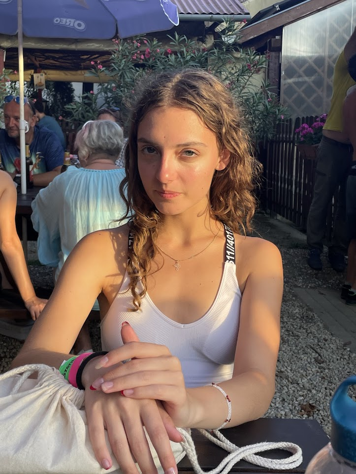

Hodvogner Emília születésnapját a Nemzeti Napirossz szervezi – de senki sem tud semmit!
Olvasóink, figyelem! Újabb különös, de rendkívül izgalmas fejlemény érkezett a közélet színpadáról: a Nemzeti Napirossz hivatalosan bejelentette, hogy ők szervezik Emi születésnapi rendezvényét. És… ennyi.
Nem tudni mikor. Nem tudni hol. Nem tudni hogyan. De azt biztosra vehetjük: valami készül. És valami nagy.
A bejelentést a Napirossz tette közzé, ám a közleményben egyetlen mondat állt: “Az esemény szervezés alatt van. Részletek? Majd ha eljött az ideje.”
Ez a titokzatosság természetesen felcsigázta a Nemzeti Napirossz olvasóit, akik azóta várják a megjelenő újságot, az új izgalmas hírekkel!
Miért ekkora titok?
Többen már összeesküvés-elméleteket gyártanak:
– Lehet, hogy maga Emi sem tudja, mikor lesz?
– Talán a bulinak már vége, vagy éppen most zajlik??
– Vagy a Napirossz szándékosan csak utólag közöl bármit, ami tőlük igencsak szokatlan?
A szerkesztőség információi szerint a Nemzeti Napirossz csak akkor fog ténylegesen új lapszámmal jelentkezni, amikor az esemény már lezajlott. Addig mindenki csak találgat. Annyit azonban még elárult a Napirossz szerkesztősége, hogy szűk körű esemény lesz, így az információk biztos kezekben marad.
Egy biztos: ha egy ország figyel valamit, az nem egy politikai döntés, nem egy futballmeccs, hanem Hodvogner Emília rejtélyes születésnapja. És hogy mi várható? Csak tippelni lehet.
Tartsatok velünk – vagy legalább naponta frissítsétek az oldalt, mert ha egyszer felbukkan a hír, nem akartok lemaradni!